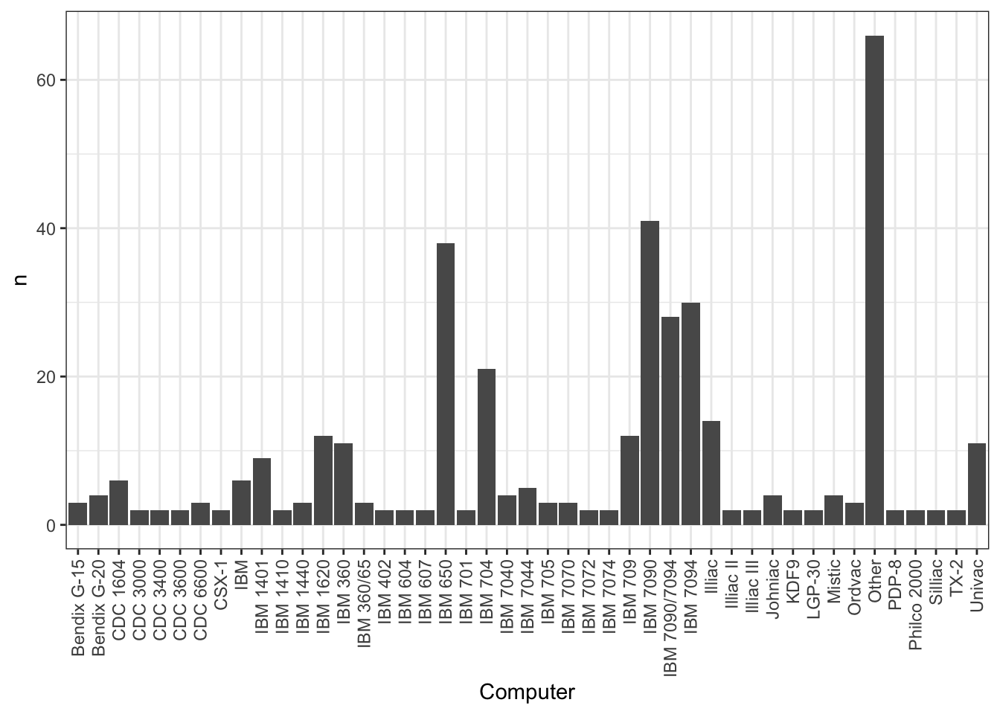
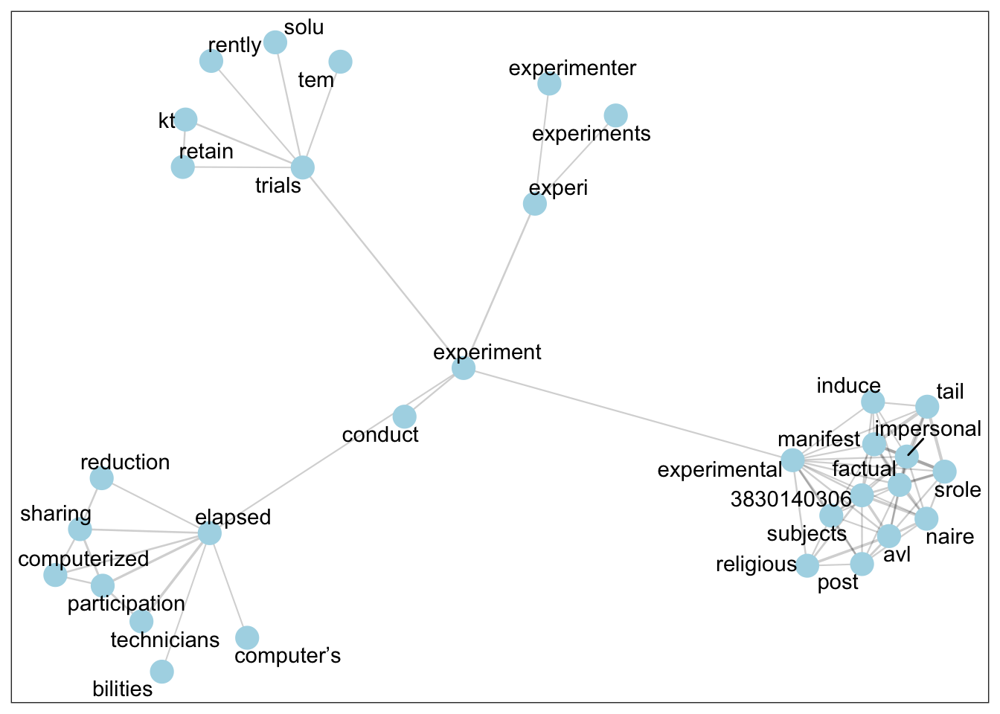
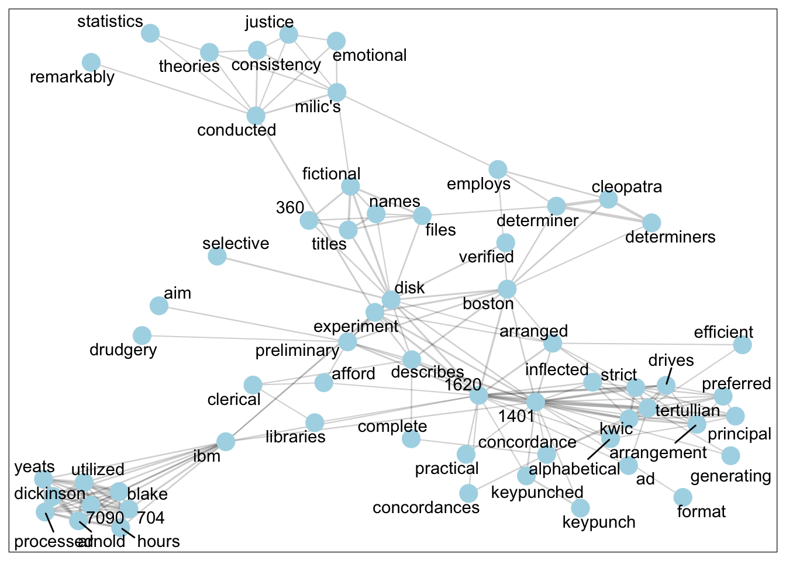

![]()
| Document Type | n |
|---|---|
| journalArticle | 355 |
| bookSection | 122 |
| book | 8 |
| conferencePaper | 8 |
| magazineArticle | 2 |
| report | 1 |
Background
The history of Digital Humanities is typically traced back to Humanities Computing, and the seminal research of Fr Roberto Busa SJ (Jones 2016). In the homo calculans project, we aim to provide a broader, interdisciplinary understanding of the origins of computing in the Humanities, Arts and Social Sciences. Drawing inspiration from studies by Sula and Hill (2019) and Kleymann, Niekler, and Burghardt (2022), we have assembled a corpus of 496 pioneering publications in the Computational Humanities, Arts and Social Sciences (HASS) from the 1950s and 60s. We annotate these articles with rich metadata, and subject them to text analysis in order to discover how computing impacted the HASS disciplines in the first two decades of electronic digital computing.
To account for the varied disciplines in the corpus, we situate our analysis in the History of the Human Sciences [Smith (1997); smith_what_2020]. In the early days of computational research, the community of computational scholars was relatively small, and disciplinary boundaries were porous. A pioneering researcher such as Jean-Claude Gardin could easily make original contributions to both Anthropology (Gardin 1965a) and Archaeology (Gardin 1965b), drawing on Literary Studies, Sociometry (Social Network Analysis) and Geography for methodological insights. By adopting the “Computational Human Sciences” as our object of study, we have been able to generate both a highly multidisciplinary corpus and a coherent set of research questions.
There is no single accepted definition of the Human Sciences. For the sake of our analysis, we adopt the definition given by Ernst Cassirer in his Logik der Kulturwisschaften (1961). In Logik, Cassirer identifies “human action” [menschliches Handeln] as the common object of what he calls the “Cultural Sciences.” The distinctive feature of “human action,” according to Cassirer, is its “mediatedness” [Mittelbarkeit]. Human actions and artefacts are not simply physical objects, but “forms of expression” [Ausdrucksformen], mediated by symbols, which require interpretation (Cassirer 1980, 26, 51). Broadly speaking, the documents in our corpus fall into Cassirer’s definition, because they comprise early attempts to model or analyse human actions using computers, whether these actions are votes, purchases, historical deeds, acts of literary composition, or new pieces of music.
The central problem raised by Cassirer’s definition is familiar to researchers in the Digital Humanities today: the problem of meaning (see e.g. Liu 2013). How can a dull, cold computer possibly enlighten us about the lively, fleshy meaning of all-to-human acts and symbols? This is a problem for us today, even in the age of lightning-fast personal computers and dazzling AI models. In the 1950s and 60s, researchers in the Human Sciences were faced with large, difficult, inaccessible devices locked away in University Computing Centres, and had to justify their methods to scholarly colleagues who might not even have computer access.
It is in this context that we propose our three research questions:
RQ1. What were the central methods of study across the different disciplines?
RQ2. How did scholars explain and justify their new methods? What rhetorical or affective devices did they use to obtain acceptance for their results?
RQ3. How can this history help us understand the breadth of Computational Human Sciences today?
The Corpus
The corpus for this study includes 496 publications published between 1950 and 1969 (Table 1). The corpus is in the form of a Zotero library, which can be viewed online, though without full-text access for copyright reasons1 While most publications presented original research, the corpus also included reviews and conference reports. All items were written in English as the search was conducted in this language.
The corpus was built using purposeful snowball sampling. First, we started with Guetzkow (1962), tracing both its cited references and subsequent citations within the 1950 to 1969 timeframe. This process yielded 88 sources. Next, we examined the journal Behavioral Science, which featured a ‘Computers in Behavioral Science’ section from 1959 to 1967, identifying 112 relevant sources. This concentration likely explains the relative over-representation of behavioural science and psychology within the corpus. We then reviewed the journal Computers and the Humanities (1967–1969), locating 73 sources, as well as the 1966 annual bibliography published in 1967, which yielded 67 additional references. We did not proceed beyond 1966 due to the rapidly increasing volume of references. We then included papers from three well-known multi-disciplinary collections of the 1960s, including Bessinger, Parrish, and Arader (1964), Hymes (1965) and Stone et al. (1966). At this point, we observed that several disciplines, such as Religious Studies and History/Cliometrics were under-represented. To complete the search, therefore, we conducted targeted Google Scholar searches using the keywords ‘discipline + computer’, which added 31 sources.
Items in the corpus were systematically tagged for discipline and computer. We determined the disciplines of each text and any computers by reading the abstract and, if necessary, the text. Our approach was inspired by Sula and Hill (2019), but differs in an important respect. Sula and Hill (2019) determine the discipline of an article by inspecting the author affiliation. Our approach prioritises how the sources themselves framed disciplinary identity and computational engagement.
High-level statistics on the discipline and computer tags are show in Table 2 and Figure 1. At the time of writing this abstract, we have not fully normalised the discipline tags, though we intend to do so.

The meaning of ‘experiment’
To understand the range of methods (RQ1) and their justification (RQ2), we investigate keywords in the corpus using various text-analytic techniques. In this abstract, we show just one of these techniques: lexical network analysis. Figure 2 and Figure 3 show lexical networks for the word “experiment” in the Psychology (n=71) and Literary Studies (n=46) articles in the corpus. To produce these networks, the documents are split into 200-word chunks, pairwise correlations are computed between all the words, the data is converted into a graphical format using iGraph, edges are dropped between words if their pairwise correlation is less than 0.35, and then the neighbourhood of order 2 is shown for the target word (in this case, “experiment”). In a nutshell, the figures show the most closely associated words with the target word, along with the associated words’ most associated words.


As can be seen, the discourse of “experiment” differs markedly in the Psychology and Literary Studies articles. In the Literary Studies articles, the experiment is the use of computers. Close associates of the word “experiment” include the names of popular contemporary machines (e.g. the IBM 1401 or 1620), and words describing the concrete process of using the computer (hours, processed, verified, disk, arranged, etc.). The discourse in Psychology is nothing like this. In the 1950s and 1960s, Psychology was already established as an “experimental” discipline, especially in the United States, where most of our corpus originates. Here the computer is talked about in a more abstract way, as an existing experimental paradigm is computerized, perhaps with a corresponding reduction of effort.
The nature of computation
As well as investigating particular methods or methodological concepts, we also investigate the concept “computational” itself. One of the most fruitful lines of inquiry is metaphor:
As you know by now, if you have been following these lectures, computers are not giant brains at all; they are giant clerks. (Green 1961, 227)
The words “clerk” or “clerical” (including plurals and other derivations) appear in 79 articles in the corpus. Close reading of these instances indicates that there was a fluid boundary between metaphorical and literal clerks in the early days of the Computational Human Sciences. Sometimes, a computer would be gradually programmed by a research group to resemble their human clerks, until the human clerks no longer found employment in the research.
Some researchers found this metaphor uninspiring:
We are still not thinking of the computer as anything but a myriad of clerks or assistants in one convenient console. Most of the results I have just described could have been accomplished with the available means of half a century ago. We do not yet understand the true nature of the computer. And we have not yet begun to think in ways appropriate to the nature of this machine.(Milic 1966, 4)
Researchers in this school tried to push the Computational Human Sciences furhter into the new field of Artificial Intelligence. Perhaps the computer could think differently, and allow the researcher to pose new questions. One researcher who argued this was was Gardin, who insisted that in the the process of scholar-computer interaction, the computer could gradually move beyond “clerical drudgery,” and take over the “‘intelligent’ functions of problem-solving” normally reserved to the scholar who leads the research team.
The computer-as-clerk was one solution to the problem of meaning. In this metaphor, the computer merely automated non-scholarly tasks hitherto undertaken by clerical staff, rather than by the scholar her- or himself. This metaphor vividly evokes the social, moral and cultural situation of humanistic and social-scientific research in the 1950s and 60s, and provides further reflection on the origins of Digital Humanities, and the values encoded in our methods today. The computer-as-intelligence was then, and remains now, a radical proposition about the nature of human and machine reasoning, whose implications are as thrilling—and frightening—as they were in the 1950s and 60s.
Conclusion
Researchers in the Human Sciences adopted computational methods enthusiastically as soon as high-speed digital computers became available at the end of the 1940s. This is the first study to systematically compare the epistemic and cultural impacts of computing across the Human Sciences in the first two decades of computing. Although researchers brought different disciplinary assumptions to computing, the fundamental problem of the computer’s meaningless was common across the disciplines. Researchers proposed different solutions to this problem. Sometimes they accomodated computers into existing social structures, casting them as “clerks” which merely automated low-value work in the lab or library. Sometimes they cast their work as more “experimental,” considering ways that computers might actually alter the very nature of their disciplines. We have only scratched the surface in this abstract, and hope to present a fuller picture in the full paper.
References
Bessinger, Jess B. Jr., Stephen M. Parrish Parrish, and Harry F. Arader, eds. 1964. Literary Data Processing Conference Proceedings. New York: IBM.
Cassirer, Ernst. 1980. Zur Logik Der Kulturwissenschaften: Fünf Studien. Darmstadt: Wissenschafltiche Buchgesellschaft.
Gardin, J. C. 1965a. “A Typology of Computer Uses in Anthropology.” In The Use of Computers in Anthropology, edited by Dell Hymes, 103–18. Berlin, New York: DE GRUYTER MOUTON. https://doi.org/10.1515/9783111718101.103.
———. 1965b. “Reconstructing an Economic Network in the Ancient East with the Aid of a Computer.” In The Use of Computers in Anthropology, edited by Dell H. Hymes and Wenner-Gren Foundation For Anthropo, 377–92. Berlin, New York: DE GRUYTER MOUTON. https://doi.org/10.1515/9783111718101.377.
Green, Bert F. 1961. “Using Computers to Study Human Perception.” Educational and Psychological Measurement 21 (1): 227–33. https://doi.org/10.1177/001316446102100123.
Guetzkow, Harold Steere. 1962. Simulation in Social Science; Readings. Englewood Cliffs, N.J., Prentice-Hall. http://archive.org/details/simulationinsoci0000guet.
Hymes, Dell H., ed. 1965. The Use of Computers in Anthropology: DE GRUYTER MOUTON. https://doi.org/10.1515/9783111718101.
Jones, Steven E. 2016. Roberto Busa, S. J. , and the Emergence of Humanities Computing: The Priest and the Punched Cards. London, UNITED KINGDOM: Taylor & Francis Group.
Kleymann, Rabea, Andreas Niekler, and Manuel Burghardt. 2022. “Conceptual Forays: A Corpus-Based Study of ‘Theory’ in Digital Humanities Journals.” Journal of Cultural Analytics 7 (4). https://doi.org/10.22148/001c.55507.
Liu, Alan. 2013. “The Meaning of the Digital Humanities.” PMLA 128 (2): 409–23. http://www.jstor.org/stable/23489068.
Milic, Louis T. 1966. “The Next Step.” Computers and the Humanities 1 (1): 3–6. https://www.jstor.org/stable/30199191.
Smith, Roger. 1997. The Fontana History of the Human Sciences. London: Fontana.
Stone, Philip J., Dexter Dunphy, Daniel M. Ogilvie, and Marshall S. Smith, eds. 1966. The General Inquirer: A Computer Approach to Content Analysis. Cambridge, Mass: M.I.T. Press.
Sula, Chris Alen, and Heather V Hill. 2019. “The Early History of Digital Humanities: An Analysis of Computers and the Humanities (1966–2004) and Literary and Linguistic Computing (1986–2004).” Digital Scholarship in the Humanities, November, fqz072. https://doi.org/10.1093/llc/fqz072.